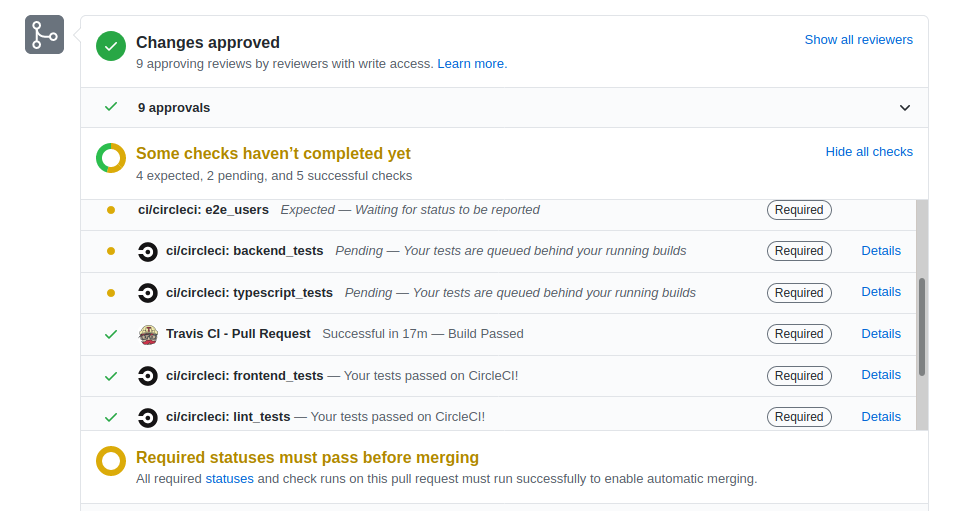
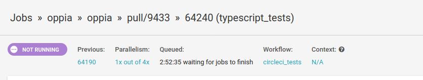
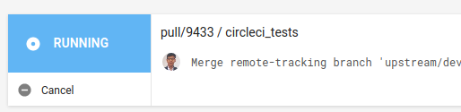
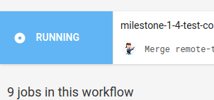

Instructions for making PR passes
Overview
The purpose of making manual passes over PRs is two-fold:
To give a human touch to the PR process.
To decrease the number of open PRs.
As of this writing, Oppiabot has been in operation for about 2 years with the goal of automating most of the processes that used to be done by the former maintainer’s group on a weekly basis. However, replacing a human with a bot resulted in decreased “warmth” in the review process and more PRs were being closed rather than being completed. After the dev workflow lead resumed the process of manually reviewing PRs, PRs were being completed faster, and fewer were closed. Therefore, the community should strive to have a human in the review process as much as possible.
Purpose:
The purpose of the rotation is to gauge the health of the community and the PR process, it is not to take over the responsibility of checking PR health. At the end of completing all of the steps below, you should be able to:
Gauge the overall wellbeing of the community.
Know the current responsibilities of individuals.
Determine what dev workflow support the community requires.
Full Pass
Goal: Move all PRs forward so that they aren’t stale and ensure that the assignee field is accurate. Most importantly, to ensure that contributors aren’t stuck (since some may not ask for help when they need it). On Github:
For every PR, perform the following:
Collect the following pieces of information from the PR:
Whether there’s a “First-time contributor” label on the PR.

Check all the assignees of the PR.
Go through the thread and check the last date of their assignment.
Check if the PR has the LGTM label.
Actions to take:
If it’s a first-time contributor’s PR
If the author hasn’t followed any OppiaBot’s comments, then explain that comment and ask/help them to follow it. [e.g, New contributor doesn’t have rights to add a label to the PRs, help them by adding a label to the PR]
If they have pushed changes but not replied/assigned/pinged any reviewers:
Ask the contributor to follow the instructions provided on the wiki page. (and if possible write the important instructions explicitly.)
If a contributor (including the author) is assigned for at least 2 days, then:
@-mention the contributor that they should take action or reach out if they have questions. [Asks contributors to follow the process (like follow Oppia bot comments) with a wiki link instead of just writing the step.] Note: If the reviewer has left a comment and has forgotten to assign the author and unassign themselves, ping them and ask them to do so. Note: If the contributor did not respond to the last ping, do not @-mention the contributor again, let Oppiabot automatically close the PR.
If the PR has LGTM label but tests failed, then:
Check that the tests are not flaky, if so, restart them.
If the tests are not the result of flakiness, @-mention the author that tests failed.
If the PR has an LGTM label and all tests pass, then:
Check that there are no outstanding comments
If there are none, then merge the PR.
At the very end, ensure that no one contributor has too many open PRs (ie. over 3), if so, please encourage them to complete those PRs before opening new ones. Also, if there is a reviewer with a lot of PRs assigned to them, then it’s worth starting a conversion whether the reviewer needs to focus their code ownership. Finally, if there are any community-wide issues, please let the community and core maintainers know.
Cancelling CI Builds
Overview
Builds sometimes are canceled for the following reasons:
CI queue is very high.
Contributor clearly needs to perform more work on the PR due to one of the following:
Merge conflict
Outstanding comments from reviewers.
Note: Please ensure that you logged into TravisCI or CircleCI, otherwise, you can’t cancel.
CircleCI
Keep in mind that it is not possible to cancel all CircleCI builds due to permission issues.
Click on any “Details” link that corresponds to CircleCI in the status checks section at the bottom. 
Click on “circleci_tests” at the top section. 
Click on the Cancel button in the top left.  If you don’t see the “Cancel” button, you can’t cancel this build like the following:

Rota
Dev-workflow team members are expected to take a full pass on a weekly basis and create a report which the team lead can share with Core-maintainers in the Core-maintainer’s meeting.
Current Dev-workflow team members taking pass: @sajalasati & @DubeySandep
Weekly report doc: https://docs.google.com/document/d/1lisXJYYXbmLGLGWoJx0E0XxAMndVG0J98KMp8N-hOho